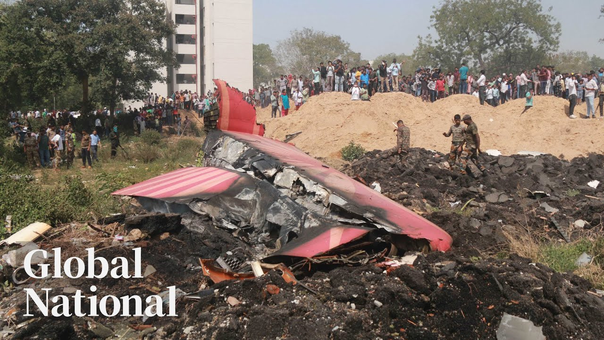

【Global News 关于印度航空致命空难的最新进展】
Summary: A Boeing Dreamliner crashes in India, killing 241 people, including a Canadian. The sole survivor recounts the tragedy, while investigations begin. Meanwhile, a suspected Indian agent spied on a Canadian politician, and a US senator is forcibly removed from a news conference.
摘要： 一架波音787梦幻客机在印度坠毁，造成241人死亡，其中包括一名加拿大人。唯一幸存者讲述了这场悲剧，调查随即展开。与此同时，一名疑似印度特工监视加拿大政客，一名美国参议员被强行带离新闻发布会现场。

⏱️ Estimated Reading Time: 32 min
📚 六级生词 📚 雅思生词 📚 托福生词 📚 专八生词 📚 SAT生词 📚 考研生词 📚 GRE生词 📚 高考生词
[Music] Airline disaster.
[音乐] 航空灾难。
A Boeing Dreamlininer plunges to the ground moments after takeoff in India.
一架波音787梦幻客机在印度起飞后不久坠毁。
We are going to do a fair and thorough investigation.
我们将进行公正彻底的调查。
What we're learning about the Canadian passenger killed and what the sole survivor is saying.
我们了解到遇难的加拿大乘客的情况以及唯一幸存者的叙述。
Under surveillance, how sources say a suspected Indian government agent was spying on former federal NDP leader Jugmeet Singh.
据消息人士透露，一名疑似印度政府特工监视了加拿大前联邦新民主党领袖驵勉诚。
A Global News exclusive this Thursday night.
本周四晚全球新闻独家报道。
Kicked out, sir.
先生，请离开。
Sir, why this California senator was forcibly removed from a news conference and specialized surgery.
先生，这位加州参议员为何被强行带离新闻发布会，以及一项特殊手术。
It could really open up a lot of doors for more independence.
这可能会为更多独立性打开大门。
The procedure that could change this Canadian teenager's life.
这项手术可能改变这名加拿大青少年的生活。
Global National with Donna Fzen.
全球国家，唐娜·弗雷森主持。
Good evening and thanks for joining us.
晚上好，感谢收看。
The sole survivor of a devastating plane crash in India says it all happened within seconds.
印度空难唯一幸存者称一切发生在几秒内。
The fully loaded Boeing 787 Air India flight crashed shortly after takeoff.
满载的印度航空波音787航班起飞后不久坠毁。
Its tail section left protruding from the building it hit.
机尾部分卡在撞击的建筑外。
Emergency crews hoping to find survivors were left waiting with empty stretchers.
救援队希望找到幸存者，却只能空等。
The crash was catastrophic.
这场空难是毁灭性的。
The Boeing Dreamliner was flying from Amedabad in northwestern India to London Gatwick but barely made it into the air.
这架波音787原定从印度西北部艾哈迈达巴德飞往伦敦盖特威克，但几乎未能升空。
It crash landed less than a minute later on a medical college near the airport.
不到一分钟后，它坠毁在机场附近的医学院。
That college is in a dense residential area.
该学院位于人口密集的居民区。
Dozens of people on the ground have been killed and injured and 241 people on the plane, including a Canadian woman, have died.
地面数十人死伤，机上241人遇难，包括一名加拿大女性。
Our coverage begins with Redmond Shannon and a warning some of the images may be disturbing.
雷德蒙·香农为您报道，部分画面可能令人不适。
Just moments after takeoff, Air India Flight 171 began losing altitude.
印度航空171航班起飞后不久开始下降高度。
The Boeing 787 crashing into a medical college, a short distance from Amhurabad airport.
波音787坠入距艾哈迈达巴德机场不远的医学院。
The plane was loaded with fuel for its journey to London.
飞机满载飞往伦敦的燃油。
Most of the 242 passengers and crew and anyone on the ground stood little chance.
机上242名乘客和机组人员及地面人员生还希望渺茫。
This man who works near the crash site said he heard a loud noise and rushed outside to a scene of chaos.
一名在坠机点附近工作的男子称听到巨响，冲出去看到混乱场景。
Authorities have recovered more than 200 bodies.
当局已找到200多具遗体。
It's not yet known how many were passengers and how many were people in the college.
尚不清楚遇难者是乘客还是校内人员。
At least 50 of its students were injured.
至少50名学生受伤。
Very tragic and very very horrific and even till now I have to say I'm in a state of shock.
非常悲惨恐怖，至今我仍处于震惊中。
As families of passengers look for answers, India's aviation minister promises the investigation will be thorough.
遇难者家属寻求答案时，印度航空部长承诺彻底调查。
I can only think about the passengers, their families, what they might be going through.
我只想到乘客及其家属正经历的痛苦。
India says there was only one survivor Romesh Viswashkumar believed to be shown here in a video posted by an Indian news outlet.
印度称唯一幸存者是罗梅什·维什瓦什库马尔，印度媒体发布的视频据信是他。
This footage has not been verified by global news.
全球新闻未核实该视频。
He reportedly said because he was sitting in seat 11A beside an emergency exit, he managed to get out quickly.
据报道他因坐在11A靠近紧急出口的位置得以迅速逃生。
The British man said his brother was also on board.
这名英国男子称其兄弟也在机上。
Their family numbed by the news.
全家因消息陷入麻木。
He video called my dad as he crashed.
坠机时他给父亲打了视频电话。
He said, "Our planes crashed, all of that. I don't know where my brother is. I don't see any other passengers. I don't know how I how I'm alive."
他说："飞机坠毁了。我不知道兄弟在哪，没看到其他乘客，不知自己怎么活下来的。"
The flight was scheduled to land here at London Gatwick Airport where a reception center for loved ones has now been set up alongside the one Canadian victim.
航班原定降落伦敦盖特威克机场，现已设立家属接待中心，包括那名加拿大遇难者。
More than 23 of the people on board were Indian citizens, 53 were British.
机上超23名印度公民，53名英国人。
Donna Redmond Shannon, thanks.
唐娜·雷德蒙·香农，谢谢。
Boeing Dreamliners had a good safety record until today.
波音787此前安全记录良好。
Whether it was mechanical or pilot error or something else, it's clear something went wrong immediately.
无论机械故障、操作失误或其他原因，显然立即出现了问题。
Indian aviation authorities say the pilot issued a mayday call right after takeoff.
印度航空当局称飞行员起飞后立即发出求救信号。
Jackson Prosco explains what we know about the crash and what investigators will be looking for.
杰克逊·普罗斯科解析空难已知信息和调查重点。
Whatever happened to Air India Flight 171 happened fast.
印度航空171航班事发突然。
Just seconds after takeoff, the plane appeared to struggle and the aircraft did not climb.
起飞几秒后飞机似乎挣扎且未能爬升。
Um it it got a little bit off the ground and then it just started sinking um back down.
它略微离地后就开始下坠。
They definitely did not have the performance uh that they needed to conduct that flight.
显然未达到正常飞行性能。
And the big question now is why.
现在关键问题是原因。
Investigators will have to probe multiple points of failure.
调查需排查多个故障点。
The plane, its engines, pilot error, and outside factors.
飞机本身、引擎、操作失误及外部因素。
We won't know that answer until we have a look at the black boxes.
查看黑匣子前无法确定。
The world wants to know pretty quickly.
全球希望尽快获知真相。
Until now, the Boeing 787 Dreamliner has never been involved in a fatal crash.
此前波音787从未发生致命空难。
Worldwide, there are nearly 1,200 of the aircraft in service.
全球近1200架该机型服役中。
Air Canada and WestJet both operate them, though only Air Canada operates the smaller 8 series, the model involved in Thursday's crash.
加航和西捷航空均有运营，但仅加航运营涉事的小型8系列。
The 787, the Dreamliner, has been an aircraft that has been in operations now for many years, operating uh in in large fleets around the world um without any issues.
787梦幻客机已运行多年，全球大规模机队未出现问题。
When it entered service in 2011, the 787 was a marvel, heavily computerized and made primarily of carbon fiber.
2011年投入使用时，787因高度计算机化和碳纤维主体被视为奇迹。
Early on, there were problems.
早期曾有问题。
In 2013, a series of onboard fires led the US Federal Aviation Administration to ground all Dreamliners for months.
2013年多起起火事件致美国联邦航空管理局停飞所有787数月。
The problem was later linked to the onboard batteries.
问题后确认为机载电池。
Last year, as Boeing reeled from the fallout from incidents with its smaller 737 Max planes, a whistleblower alleged serious problems with the 787 that could cause the plane to break apart midair.
去年737 Max事件后，吹哨人指控787存在可能导致空中解体的严重问题。
At the time, Boeing said extensive testing found no issues with the long-term safety of the Dreamliner.
当时波音称大量测试未发现787长期安全隐患。
The company says it's prepared to fully support the investigation into the Air India crash and will work with Indian authorities.
波音表示将全力配合印航空难调查，与印度当局合作。
Jackson Prosco, Global News, Washington.
杰克逊·普罗斯科，全球新闻，华盛顿。
Families around the world are grieving tonight.
今夜全球家庭陷入悲痛。
Air India says among the passengers were 169 Indian nationals, 53 British nationals, seven people from Portugal, and one Canadian, a dentist from Missaga, Ontario.
印航称乘客包括169名印度人、53名英国人、7名葡萄牙人和1名加拿大安大略省密西沙加牙医。
All of them boarded a flight that never reached its destination.
他们登上了永远无法抵达的航班。
Ethu Garcher reports on what we know about them.
埃图·加切尔报道遇难者信息。
One of the victims confirmed aboard the crashed Air India flight was Canadian dentist Dr. Narali Suresh Kumar Patel.
遇难者包括加拿大牙医纳拉利·苏雷什·库马尔·帕特尔博士。
She worked in Missaga and leaves behind her husband and their one-year-old child.
她在密西沙加执业，遗下丈夫和一岁孩子。
According to her clinic's website, Dr. Patel graduated from dental college in India before moving to Canada.
诊所网站显示，帕特尔博士毕业于印度牙科学院后移居加拿大。
She's described as a dedicated care provider who enjoyed volunteering in the community at free dental camps.
她被描述为热心公益的敬业医者，常参与免费牙科义诊。
As the Hindu community mourns, this Toronto temple is holding prayers for peace.
多伦多印度教寺庙为遇难者举行和平祈祷。
I'm very very sad. It's very uh tragic accident. Um and we are feeling for all the family family members of the victims.
我非常悲伤，这是巨大悲剧，我们与遇难者家属同感悲痛。
It is um uh shocking for her husband. It was a real shocking and uh devastating news because Nali just went about four or five days just less than week ago in India.
她丈夫深受打击，纳利几天前刚去印度。
Relatives gathered outside hospitals and DNA samples are being collected for victim identification.
亲属聚集医院外，正采集DNA用于身份确认。
This man says his daughter-in-law was on the flight. he had dropped her off at the airport before getting a message about the incident.
这名男子称儿媳在机上，他送机后得知空难消息。
This man says his uncle was on the plane. They tried calling him after hearing what happened, but couldn't reach him.
另一人称叔叔在机上，得知消息后联系未果。
This woman says her son, a doctor present at the hostel, was having lunch inside when the plane crashed into it. She says he's safe.
一名女子称医生儿子在宿舍午餐时遭遇坠机，所幸安全。
Global Affairs Canada confirms one Canadian, was on board and says consular officials are in contact with local officials and the victim's family.
加拿大全球事务部确认一名公民遇难，领馆人员正与当地政府及家属联系。
One thing I wanted to mention today is uh how devastating the air crash in India is.
今日我想强调印度空难的毁灭性。
Prayer services are expected to continue in Toronto and other communities as families await further updates from Indian authorities.
多伦多等地将持续祈祷活动，家属等待印度当局进一步消息。
Nitu Gara, Global News, Burnaby, BC.
尼图·加拉，全球新闻，BC省本拿比。
Israel has launched strikes on targets in Iran after the American president warned there was a chance of what he called a massive conflict in the Middle East.
美国总统警告中东可能爆发大规模冲突后，以色列空袭伊朗目标。
There are reports of explosions being heard in the Iranian capital, Thran. It's not clear what has been hit.
据报道德黑兰听到爆炸声，目标尚不明确。
According to several US news outlets, Israel was poised to launch strikes against Iran's nuclear facilities.
多家美媒称以色列准备打击伊朗核设施。
The US ordered its embassy in Iraq to partially evacuate Wednesday in case of retaliatory strikes from Iran.
美国周三下令驻伊拉克使馆部分撤离以防伊朗报复。
It's also restricted movement of staff in Israel.
同时限制驻以色列人员行动。
Global Affairs Canada says it won't comment on reports about the situation.
加拿大全球事务部拒绝对局势置评。
Talks between the US and Iran on a nuclear deal are set to continue next week, and President Trump had urged Israel's Prime Minister to avoid attacking Iran during those negotiations.
美伊核协议谈判下周继续，特朗普曾敦促以色列总理谈判期间勿攻击伊朗。
A Global News investigation has uncovered who put former NDP leader Jugmeet Singh under surveillance in 2023, prompting the RCMP to put him under tight police protection.
全球新闻调查揭露2023年监视前新民主党领袖驵勉诚的幕后黑手，促使皇家骑警对其严密保护。
Singh revealed in April police had told him about a credible risk to his life.
驵勉诚四月透露警方告知其生命受可信威胁。
And sources now tell Global News a suspected Indian government agent was behind it.
消息源称疑似印度政府特工是主谋。
Mercedes Stevenson has the exclusive details and why Canada's prime minister is being asked to rescend the Indian prime minister's invitation to the G7 next week.
梅赛德斯·史蒂文森带来独家细节，及为何要求加拿大总理撤销对印度总理的G7邀请。
Let's get out there and do it.
我们开始行动吧。
Jugmeet Singh is used to being in the public eye.
驵勉诚习惯公众关注。
The former NDP leader wasn't just being watched, he was being tracked.
这位前新民主党领袖不仅被监视，更遭追踪。
Why a suspected Indian government agent operating on Canadian soil who obtained access to intimate knowledge of Singh's daily routines, travel, and even his family.
因疑似印度特工在加境内获取了驵勉诚日常行程甚至家庭的私密信息。
Sources tell Global News the agent who is allegedly tied to Indian government directed activities is also connected to organized crime.
消息源称该特工涉嫌与印度政府指挥的活动有关，且与有组织犯罪关联。
the Lawrence Bishnoi gang, a criminal group the Indian government has been accused of using to commit violence in Canada.
劳伦斯·比什诺伊帮派被指控受印度政府指使在加实施暴力。
When the RCMP discovered the surveillance in late 2023, they notified Singh about a credible risk to his life.
2023年底皇家骑警发现监视后告知驵勉诚生命受威胁。
Singh and his home were placed under heavily armed round-the-clock police protection.
驵勉诚及住所被全副武装的警方24小时保护。
He spoke publicly about it just before election day.
他在选举日前公开谈及此事。
I had the chills thinking about what that could mean for my wife who was pregnant at the time, for my little my little my baby girl.
想到当时怀孕的妻子和幼女可能的遭遇，我不寒而栗。
At the time, even Singh didn't know exactly who was targeting him.
当时驵勉诚也不清楚谁在针对他。
They didn't specify the source, but the intimation was that it was a foreign threat.
警方未明确来源，但暗示是外国威胁。
The revelation a suspected Indian agent tracked a Canadian federal leader is a chilling escalation of foreign interference threats in Canada.
印度特工监视加联邦领袖的揭露，显示外国干预威胁升级。
But for many in the sick community, it is both frightening and familiar.
但对锡克群体而言，这既可怕又熟悉。
Community is is is very very upset.
社群非常愤怒。
Hardeep Singh Nijer was murdered outside his gdwara in Suriri BC in 2023.
2023年哈迪普·辛格·尼贾尔在BC省素里寺庙外遇害。
[\h__\h] a sik had long angered India by promoting independence for the Indian state of Kalistan.
[\h__\h] 锡克人长期因推动卡利斯坦独立激怒印度。
Prime Minister Trudeau first publicly linked India to Nijer's murder.
特鲁多总理首次公开将印度与尼贾尔谋杀案关联。
Canadian security agencies have been actively pursuing credible allegations of a potential link between agents of the government of India and the killing of a Canadian citizen.
加安全机构积极追查印度政府特工与加公民遇害的潜在关联。
The RCMP say the Bishnoi organized crime group carried out the execution.
加拿大皇家骑警称Bishnoi有组织犯罪集团实施了刺杀。
The same gang the Indian agent surveilling Singh was connected to.
监视Singh的印度特工与该团伙有关联。
National security sources tied Nijer's killing to the highest levels of the Indian government.
国家安全消息人士将Nijer遇害案与印度政府最高层联系起来。
Prime Minister Mod's right-hand man.
指控涉及莫迪总理的亲信。
An allegation India has denied.
印度政府对此予以否认。
The RCMP says India is responsible for more than just Niger's murder.
加拿大皇家骑警称印度不仅对Nijer谋杀案负有责任。
We reached a point where we felt it was imperative to confront the government of India and inform the public about some very serious findings that have been uncovered through our investigations.
我们认为必须直面印度政府并向公众通报调查中发现的严重问题。
Sing's former colleagues reacted with shock.
Singh的前同事对此表示震惊。
When a foreign state is threatening the lives of uh a federal Canadian political party leader, I think it's incumbent upon the prime minister to protect us.
当外国政府威胁加拿大联邦政党领袖生命时，总理有责任保护我们。
Modi will arrive in Canada this weekend on Prime Minister Mark Carney's invitation.
莫迪应马克·卡尼总理邀请将于本周末访问加拿大。
The World Sick Organization calls that a betrayal.
世界病患组织称此举是背叛。
If targeting a Canadian political leader on Canadian soil isn't enough to be barred from entering Canada, then where is our red line?
如果在加拿大国土上针对加政要都不足以禁止入境，我们的红线何在？
National security sources are also criticizing the Modi invite.
国家安全人士也批评对莫迪的邀请。
Donna, India refuses to cooperate with the RCMP investigation into Nijer's assassination along with other alleged violent crime investigations across Canada.
印度拒绝配合加皇家骑警对Nijer刺杀案及加境内其他暴力犯罪调查。
Tonight, the prime minister's office told us Mod's invitation stands, noting the economic and regional influence that India holds and saying the two prime ministers have agreed to discuss quote law enforcement dialogues.
总理办公室表示维持对莫迪邀请，强调印度经济及地区影响力，双方同意展开"执法对话"。
Donna. Okay, Mercedes. Thanks. Global National will be in Alberta next week for the G7 summit.
感谢Mercedes。下周全球国家将赴阿尔伯塔报道G7峰会。
Join us on Monday and Tuesday from BAM for full coverage.
周一、周二请锁定我们的全面报道。
In Quebec, a police sting operation on organized crime closed in on suspects in multiple cities today.
魁北克警方今日在多市展开针对有组织犯罪的突袭行动。
Nearly 150 police officers arrested 11 people.
近150名警员逮捕11人。
All of them are suspected to be members of gangs operating in that province.
均涉嫌为该省犯罪集团成员。
The alleged leader of the Montreal Mafia is among them.
包括蒙特利尔黑手党头目。
They face charges related to violent crime stretching back more than a decade, including multiple murders.
被控涉十余年暴力犯罪，包括多起谋杀。
Dan Spectre reports on the takedown.
Dan Spectre报道此次行动。
Police are calling it the biggest organized crime bust this decade.
警方称这是十年来最大有组织犯罪打击行动。
11 men between the ages of 27 and 57 were arrested Thursday morning.
周四上午逮捕11名27至57岁男子。
Members of the Montreal Mafia, the Hell's Angels, and street gangs.
涉及蒙特利尔黑手党、地狱天使及街头帮派。
This is a major uh major blow.
这是重大打击。
Uh three different factions were attained, not just the Italian mafia.
打击三个不同派系，不限于意大利黑手党。
So, it's going to be a significant blow.
将产生重大影响。
Among those arrested in what's being dubbed Project Alliance, Leonardo Rzuto, the alleged leader of the Montreal Mafia.
"联盟行动"中逮捕蒙特利尔黑手党头目Leonardo Rzuto。
Rzuro is a big name in the in Montreal.
Rzuro是蒙特利尔黑道大人物。
Has been for the since the 1980s.
自1980年代活跃至今。
Uh but we when we put somebody in the handcuff is the Rizuro El Street Gang.
此次还打击了Rizuro El街头帮派。
We don't look really at that.
我们并不特别关注这点。
Five suspects targeted in the sting remain at large, but all of the arrests are related to murder.
五名目标嫌犯在逃，所有逮捕均涉谋杀案。
They're not going to be charged for 2 years in prison.
他们面临的不是两年刑期。
They're being charged with 25 years in prison.
而是25年监禁指控。
The key to the operation was an alleged contract killer who turned on the various criminal groups that employed him and has been collaborating with officers since 2022.
行动关键是一名职业杀手倒戈，自2022年起与警方合作。
In the past, you know, organized crime, especially the Italian organized crime or the bikers, uh they wouldn't have outsourced.
过去有组织犯罪集团（尤其意大利黑帮或飞车党）不会外包杀人。
They would have stayed within their clan and group.
通常由内部成员执行。
In court appearances via video conference from three different detention centers across Montreal.
11人通过蒙特利尔三所拘留所视频出庭。
All 11 men pleaded not guilty to charges of either first-degree murder or conspiracy to commit murder.
均对一级谋杀或谋杀共谋指控不认罪。
Members of the Rudo family attended the proceedings, including Leonardo's sister, Betina, who watched stonefaced as her brother entered his plea.
Rudo家族成员旁听，其妹Betina面无表情观看哥哥答辩。
They need to rebuild and we need to continue to put that pressure.
犯罪集团需要重建，我们将持续施压。
All 11 of the accused remain detained ahead of their next court appearance in early September.
11人还押候审，下次庭审定于9月初。
It promises to be a high-profile case.
这将是一起高关注度案件。
Dan Spectre, Global News, Montreal.
Dan Spectre，全球新闻，蒙特利尔报道。
The crown's closing arguments.
检方结案陈词。
Coming up, the prosecutor's final submissions to the judge at the Hockey Canada sex assault trial.
加拿大冰球协会性侵案中，检方即将向法官做最终陈述。
In London, Ontario, prosecutors are wrapping up their case against five former World Junior hockey players.
安大略伦敦市，检方对五名前世界青年冰球队员的指控接近尾声。
It's alleged Michael Mloud, Carter Hart, Caloot, Dylan Dubet, and Alex Foreman had non-consensual group sex with the complainant in a hotel room in 2018.
指控Michael Mloud等五人2018年在酒店房间对原告实施非自愿群交。
Shan O'Shea was in the courtroom as the crown attorney made her closing arguments.
Shan O'Shea现场报道检方结案陈词。
Sean Donna, for almost three days, defense lawyers attacked the credibility of the complaintant known as EM at various times, calling her a liar with an agenda.
辩方律师三日来多次质疑原告EM可信度，称其有预谋撒谎。
Today, the Crown attorney had a chance to say otherwise.
今日检方予以反驳。
But in wrapping up the prosecution's case, Crown Attorney Megan Cunningham said any memory gaps in her testimony are because she was experiencing a trauma response because of what happened in the hotel room.
检方Megan Cunningham称其记忆缺失是酒店事件导致的创伤反应。
Gaps in memory don't make her a less credible witness, Cunningham told the judge.
记忆空白不影响其证词可信度。
Em testified she'd been drinking a lot at a local bar where she met some of the hockey players and left with Michael Mloud for consensual sex in the room.
EM作证称在酒吧饮酒后与Mloud自愿前往房间。
Mloud sent a text message to other players inviting them to join in and court heard as many as 10 men showed up in the room.
Mloud发短信邀其他球员到场，法庭获悉最多10人进入房间。
EM had testified, "It didn't feel like I had any control. I didn't feel like I had a choice about having sex with the men."
EM表示"我感到完全失控，对性交无选择权"。
She told the court.
她向法庭陈述。
The crown attorney said that over the course of nine days on the witness stand, EM was not resentful and had no evidence of motive to fabricate.
检方指出EM九天作证期间无怨恨情绪，无伪造动机证据。
Lawyers familiar with the case but not involved in it say guilt or innocence boils down to consent and the complainant's credibility with the judge.
熟悉案件的律师表示判决关键在于是否自愿及原告可信度。
The crown has to prove for each act and for each co-acuse who did what, the absence of consent.
检方需逐项证明每名被告行为未经同意。
Her honor is going to write a road map as to how she got to her decision, her reasoning on what she believed and why.
法官将书面说明裁决理由。
Lawyers for the five defendants still have a chance to reply to the crown's arguments.
五名被告律师仍可反驳检方论点。
As for a decision in this case, the judge says she'll render that on July 24th.
法官宣布将于7月24日宣判。
Donna. Okay. Sean O'Shea in London, Ontario. Thank you.
感谢安大略伦敦市的Sean O'Shea。
Forced out and handcuffed. Next, why this happened to a US senator.
美国参议员遭强制带离并戴手铐事件。
[Music] We are staying here to liberate the city. Sir, sir, hands up. Hands up.
[音乐] "我们为解放城市而来。先生，举起手来！"
A dramatic political confrontation in Los Angeles today.
洛杉矶今日爆发戏剧性政治冲突。
Democratic Senator Alex Padilla was forcibly removed from a news conference with Homeland Security Secretary Christy Gnome.
民主党参议员Alex Padilla被强行带离国土安全部长Christy Gnome的记者会。
Gnome was justifying why US Marines and National Guards have been sent to help with immigration raids.
Gnome正解释派遣海军陆战队及国民警卫队协助移民突袭行动的原因。
Senator Padilla tried to ask a question when he was hustled out and handcuffed.
Padilla试图提问时被推搡带离并戴上手铐。
He was later released.
其后获释。
Protests against the federal immigration raids are spreading across the US.
反对联邦移民突袭的抗议席卷全美。
Protesters say the roundups of people are tearing communities and families apart.
抗议者称围捕行动破坏社区与家庭。
US Central Command now says 700 Marines could join National Guard troops on the front lines within 48 hours.
美国中央司令部称700名海军陆战队48小时内将加入前线。
California's governor has appealed to a federal court to stop Trump from using federal troops in the raids.
加州州长已向联邦法院申请阻止特朗普在行动中使用联邦军队。
Medical breakthrough next. The pioneering surgery giving hope to a Canadian teenager.
医疗突破：开创性手术为加拿大少年带来希望。
Toronto's summer Macintosh can't stop making history.
多伦多选手Summer Macintosh再创历史。
She broke her own world record in the women's 400 meter individual medley at the Canadian swimming trials in Victoria on Wednesday.
周三在维多利亚举行的加拿大游泳选拔赛中刷新女子400米混合泳世界纪录。
Macintosh is now the first swimmer to break three different individual long course world records in one swim meet since Michael Phelps did it at the 2008 Olympics.
成为自2008年菲尔普斯后，首位在同一赛事打破三项长池世界纪录的选手。
Doctors in Toronto are trying to help a 16-year-old who was left with limited movement after a bike accident last year.
多伦多医生正帮助一名去年自行车事故后行动受限的16岁少年。
This week, he'll become the youngest person in Ontario to undergo a special type of spinal surgery.
本周他将成为安大略接受特殊脊柱手术的最年轻患者。
Katherine Ward has his story.
Katherine Ward报道。
Hockey fan Henry Black is everything you might expect from a 16-year-old.
16岁冰球迷Henry Black有着典型青少年爱好。
I like to play video games.
"我喜欢打电子游戏。"
But on a bike ride almost a year ago, his life took an unexpected turn.
但一年前一次骑行改变了他的人生。
Henry picked up speed going downhill.
Henry下坡时加速。
I don't actually remember hitting the tree.
"不记得撞树瞬间。"
I got a phone call from Henry's friend said that Henry had a bad accident.
"Henry朋友来电说他遭遇严重事故。"
He couldn't move his body.
"他全身无法动弹。"
Henry underwent a 9-hour surgery and doctors found his C4 and C5 vertebrae were damaged, rendering him a quadripollegic.
9小时手术发现其C4/C5脊椎损伤导致四肢瘫痪。
I was going to start grade 11, obviously. Boom. Everything just changes.
"本该读11年级，瞬间天翻地覆。"
For the last 11 months, the Holland Blurview Rehabilitation Center in Toronto has been Henry's home.
过去11个月他住在多伦多Holland Blurview康复中心。
First pick of the draft. Now, a triple nerve transfer surgery is offering new hope.
如今三神经移植手术带来新希望。
We have to take a nerve that's connected to his spinal cord that's working um and and move it to a nearby nerve that's not working.
"将功能正常的脊髓神经移植至邻近失效神经。"
Henry will be the youngest patient in Ontario to have the procedure.
他是安大略接受该手术的最年轻患者。
It does have some movement of his shoulders, his arms, and his hands.
"他的肩、臂、手已有轻微活动能力。"
And again, the hope is that this nerve surgery can help augment and strengthen some of that movement, which could make a big difference in quality of life.
手术有望增强这些动作，显著改善生活质量。
help with opening and closing my fingers and getting some triceps where I could push down and it could really open up a lot of doors for more independence.
"帮助手指开合及三头肌发力，获得更大自主性。"
Dr. Dangler is leaving the surgery.
主刀医生Dangler指出。
She notes there is a limited window for this procedure within sort of 6 to 12 months to allow the nerves that we reconnect to grow down towards the muscle before it's too late.
"最佳手术期为伤后6-12个月，确保神经再生至肌肉。"
While the outcome is not guaranteed, Henry and his family are optimistic.
尽管结果不确定，Henry全家保持乐观。
So, we're hopeful for for anything, whatever that is.
"我们期待任何可能的改善。"
If it was me, I don't think I would be so positive.
"换作是我可能无法如此积极。"
You know, maybe because he's young and he doesn't know better or I just think his personality is such that he's he's like a a ray of sunshine.
"或许因他年轻或天生阳光性格。"
He brings that hope.
"他带来了希望。"
Katherine Ward, Global News Toronto.
Katherine Ward，全球新闻多伦多报道。
And that is Global National for this Thursday.
以上就是本周四的全球国家新闻。
I'm Donna Fzen.
我是Donna Fzen。
Tonight's Hair Canada showcases a patriotic pier in Lock Stan, Alberta, the Prairie Mountain Regional Museum in Shake, Manitoba, and Triton, Newfoundland and Labrador.
今晚《加拿大之美》将展示阿尔伯塔Lock Stan爱国码头、曼省Shake草原山地区博物馆及纽芬兰Triton。
Please send your pictures of Canadian Pride to Global National at globalnews.ca.
欢迎将加拿大骄傲照片发送至globalnews.ca。
And thanks for watching.
感谢收看。
And Gabiola will be at the anchor desk tomorrow, and I will see you again next week. Bye-bye.
明日由Gabiola主播，我们下周再见。[音乐]